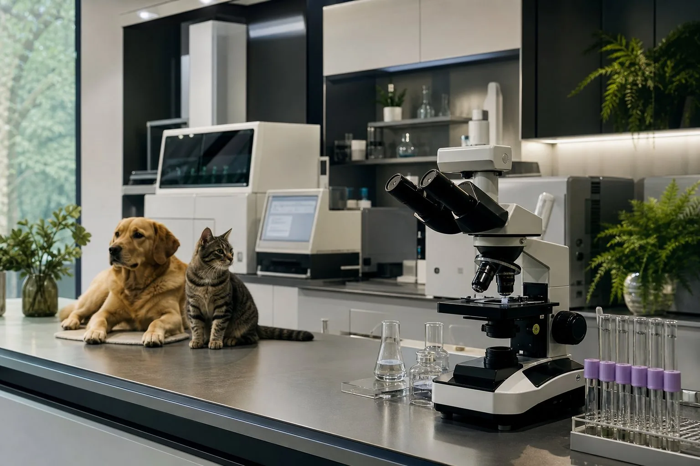

Olhar celular
A citologia ajuda a investigar alterações a partir de amostras de células.
Proposta para avaliação · Serviços e contatos sujeitos à confirmação pela Origem.
Oncopatologia veterinária dedicada à investigação de tumores em cães e gatos. Conheça os exames e análises que podem apoiar a avaliação do médico-veterinário.
Entenda como diferentes análises podem contribuir para o diagnóstico veterinário.
A citologia ajuda a investigar alterações a partir de amostras de células.
A histopatologia examina a organização dos tecidos e as características da lesão.
Marcadores podem auxiliar a caracterização de tumores em casos selecionados.
Os achados laboratoriais são relacionados à história e à avaliação do paciente.
Exames e análises que podem contribuir para a investigação de tumores em cães e gatos. A indicação depende da avaliação do médico-veterinário e das características de cada caso.
Proposta de portfólio para validação pela Origem. A disponibilidade destes serviços ainda não foi confirmada. Margens cirúrgicas e graduação tumoral são avaliações do estudo histopatológico, conforme o caso.
Avaliação microscópica de células de nódulos, massas, linfonodos ou líquidos. Pode contribuir para investigar alterações inflamatórias e suspeitas de neoplasia.
Estudo de tecidos obtidos por biópsia ou cirurgia. Avalia a organização da lesão e contribui para caracterizar processos tumorais.
Análise complementar que utiliza marcadores em tecidos para ajudar a identificar a origem e o perfil de determinadas células tumorais.
Avaliação histopatológica das bordas da peça cirúrgica para verificar a presença de células tumorais nos limites examinados.
Avaliação de características microscópicas que ajudam a estimar o comportamento de alguns tumores, quando existe um sistema de graduação aplicável.
Reavaliação de material citológico ou histopatológico previamente examinado, quando indicada para complementar a investigação do caso.
Um roteiro de orientação. Confirme o fluxo de atendimento com o laboratório antes de encaminhar o material.
Confirme com o laboratório a disponibilidade do exame, os documentos necessários e o prazo previsto.
O médico-veterinário define a coleta. Antes do envio, confirme identificação, acondicionamento e transporte adequados à amostra.
Células ou tecidos são examinados de acordo com o exame indicado. Análises complementares podem ser necessárias.
Confirme o prazo e a forma de recebimento do laudo. A interpretação deve considerar o contexto clínico de cada paciente.
Na investigação oncológica, a qualidade da amostra e o histórico do paciente ajudam a contextualizar os achados. Antes de solicitar uma análise, esclareça os pontos abaixo com o laboratório.
A Origem Oncopatologia Veterinária tem sua apresentação voltada à investigação de alterações celulares e teciduais no contexto da oncologia animal.
O estudo de células e tecidos pode ajudar a caracterizar uma lesão. Esses achados são interpretados junto à história clínica e aos demais exames pelo médico-veterinário responsável.
Esta é uma proposta de apresentação institucional. A história do laboratório, sua equipe e a responsável técnica serão incluídas após validação pela Origem.

Consulte a disponibilidade de exames e as orientações para encaminhar seu caso.
Consultar atendimentoWhatsApp e telefoneA confirmar com o laboratório
E-mailA confirmar com o laboratório
Endereço e atendimentoA confirmar com o laboratório
Tenha em mãos as informações do paciente, a localização da lesão e o histórico clínico. Confirme com o laboratório as orientações específicas para o exame.
Os canais oficiais de atendimento serão disponibilizados após confirmação pela Origem.